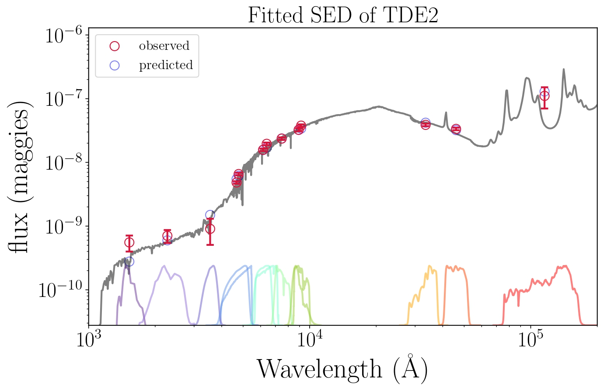
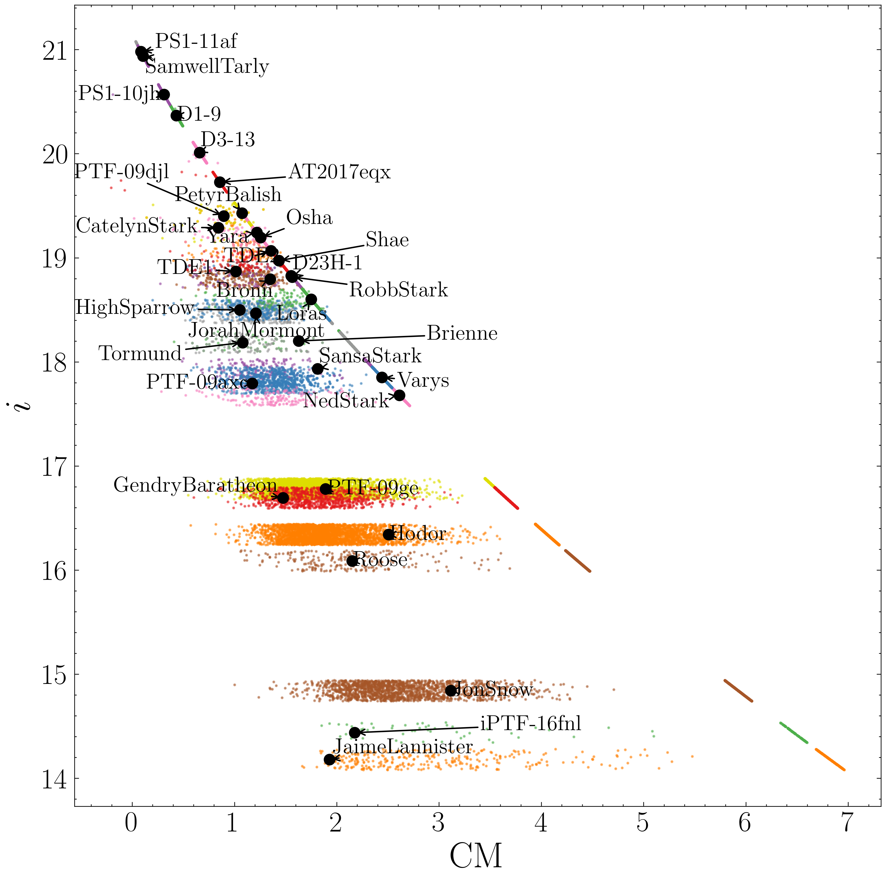

High-z quasar archive
 With Prof. Joseph Hennawi,
Dr. Riccardo Nanni and
Dr. Jan-Torge Schindler,
we provide insights into future high-z quasar search by reducing and examining spectroscopic data
of 176 high-z quasar candidates taken with the Keck Observatory in the past three years.
These candidates are from various different searches with different surveys and selection methods.
Nearly half of the candidates are selected with the method XDHZQSO.
We use the package PypeIt to reduce the data.
Among them, 7 candidates are z~6 quasars, and 51 candidates are classified as brown dwarfs.
We summarize the reduction and classification results in a catalog named "high-z quasar candidate archive".
With Prof. Joseph Hennawi,
Dr. Riccardo Nanni and
Dr. Jan-Torge Schindler,
we provide insights into future high-z quasar search by reducing and examining spectroscopic data
of 176 high-z quasar candidates taken with the Keck Observatory in the past three years.
These candidates are from various different searches with different surveys and selection methods.
Nearly half of the candidates are selected with the method XDHZQSO.
We use the package PypeIt to reduce the data.
Among them, 7 candidates are z~6 quasars, and 51 candidates are classified as brown dwarfs.
We summarize the reduction and classification results in a catalog named "high-z quasar candidate archive".
With this archive, we investigate the contaminant population in relative flux spaces.
We find that our observed brown dwarfs are not consistent with current brown dwarf models
used in quasar candidate selection methods, implying a potential deficiency of the modeling.
With the information collected in the archive, we also try to simulate the observations of fainter and more distant quasars.
By doing so, we can predict precisely the required exposure time to confirm a random quasar with three different Keck instruments
in a given seeing. These findings provide guidance for candidate selection and the strategy of spectroscopic follow-up observation in future quasar search.

TDE host galaxy
 
With this archive, we investigate the contaminant population in relative flux spaces.
With the information collected in the archive, we also try to simulate the observations of fainter and more distant quasars.
By doing so, we can predict precisely the required exposure time to confirm a random quasar with three different Keck instruments
in a given seeing. These findings provide guidance for candidate selection and the strategy of spectroscopic follow-up observation in future quasar search.
- Design: HTML5 UP